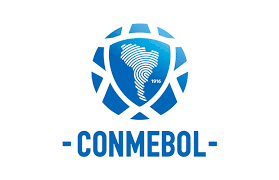

Confederación Africana de Fútbol
Confederación Africana de Fútbol (en inglés, Confederation of African Football). Esta es la principal organización que rige el fútbol en África y es una de las seis confederaciones que forman parte de la FIFA.

Confederación Asiática de Fútbol
Es el organismo rector del fútbol en la mayoría de los países de Asia, así como en Australia. La AFC es una de las seis confederaciones que conforman la FIFA.

Confederación Sudamericana de Fútbol
Se trata del organismo rector del fútbol en América del Sur y es la confederación continental más antigua del mundo, fundada en 1916.
Unión de Asociaciones Europeas de Fútbol
La UEFA es el organismo rector del fútbol en Europa y es responsable de organizar los principales torneos europeos a nivel de clubes y selecciones.

Confederación de Norte, Centroamérica y el Caribe de Fútbol
La CONCACAF es la organización que regula el fútbol en América del Norte, Central y el Caribe, así como algunas zonas de Sudamérica.

Confederación de Fútbol de Oceanía
La OFC es la confederación más pequeña de la FIFA y está compuesta principalmente por naciones insulares del Pacífico.